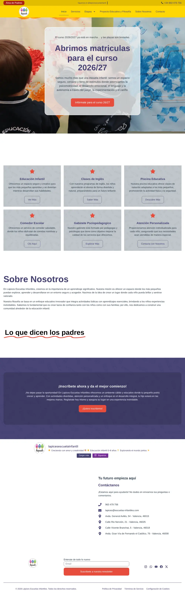
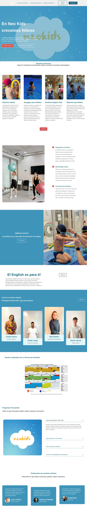
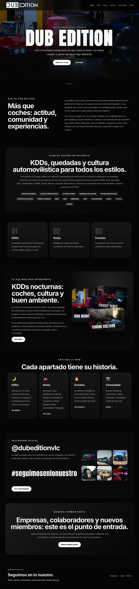
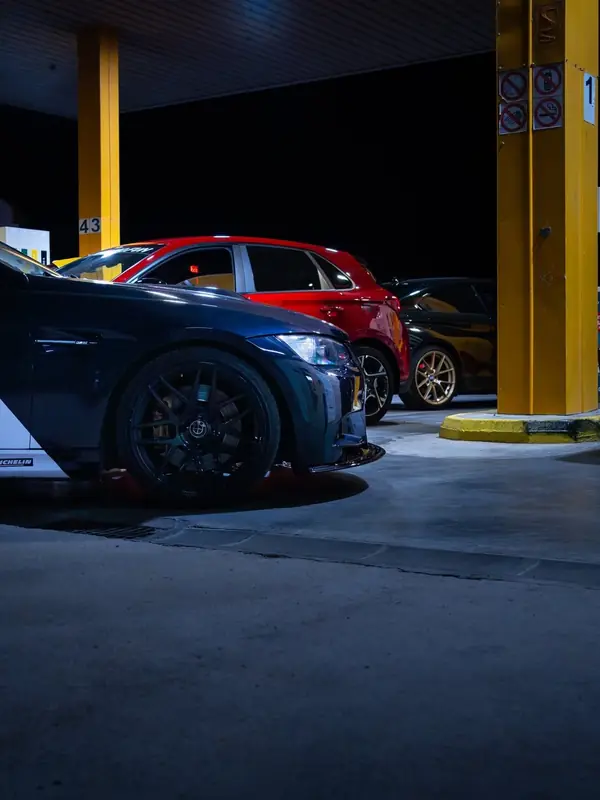

Webs y tiendas online
Webs corporativas, tiendas online y landing pages pensadas para convertir: reservas, áreas de cliente, pasarelas de pago y analítica desde el primer día.
WordPress, Elementor, PrestaShop, Shopify, HTML, CSS, JavaScript, PHP
Disponible para nuevos proyectos
Creo la parte digital de las empresas: webs que venden, software de gestión a medida, sistemas fiables y marketing que trae clientes.
Hoy llevo la tecnología y el marketing de un grupo de empresas en Valencia, y mi software de gestión lo usan cuatro empresas y más de nueve centros.
Normalmente esto lo llevan cuatro proveedores distintos. Conmigo es una sola persona, y todo encaja.
Webs corporativas, tiendas online y landing pages pensadas para convertir: reservas, áreas de cliente, pasarelas de pago y analítica desde el primer día.
WordPress, Elementor, PrestaShop, Shopify, HTML, CSS, JavaScript, PHP
Cuando las herramientas genéricas se quedan cortas, construyo la tuya: clientes, cobros, facturación, personal y CRM en una sola plataforma, con permisos por empresa y centro.
Next.js, Supabase, MySQL, PHP, Vercel
Estrategia, contenido y campañas con objetivos que se miden. He llevado una cuenta de 800 a 12.000 seguidores en menos de un año.
Meta Ads, Google Ads, Instagram, branding, analítica
Redes, servidores, equipos y soporte para que el día a día no se pare. Y automatizaciones con IA que quitan horas de trabajo repetitivo.
Windows Server, Linux, redes, Python, IA generativa
Trabajo real, en producción y con resultados.
Recreación ilustrativa de la interfaz. Los datos reales del programa son privados.
ERP a medida
Un programa de gestión al estilo SAP, hecho a medida para un grupo educativo. Desde la matrícula hasta el recibo, todo se controla en un mismo sitio: alumnado, familias, asistencia, menús, comunicados, personal, CRM, cobros y facturación. Ya está en uso y sustituirá por completo al sistema de gestión anterior del grupo.
Next.js, Supabase, Vercel

Web multicentro
La web de una red de cuatro escuelas infantiles en Valencia. Cada centro tiene su propio formulario de matrícula, las familias entran a su área privada desde la cabecera y el contenido de Instagram se actualiza solo. Cumple el RGPD con gestor de consentimiento.
WordPress, Elementor, SEO, RGPD
escuelas-infantiles.com (se abre en otra pestaña)
Web de servicios
Piscina infantil de agua salada y club de inglés. La web presenta cada actividad, el equipo y las preguntas frecuentes, y lleva directamente a reservar plaza por WhatsApp o a la matrícula online del English Club.
WordPress, Elementor, SEO
neo-kids.es (se abre en otra pestaña)+3.000
personas al mes en reservas
28.000
visitas al mes
Web con reservas
Parque infantil en Valencia con cumpleaños, comidas y cenas familiares, eventos y visitas escolares. La web tenía integrados el sistema de reservas y la gestión de clientes, y llegó a mover más de 3.000 personas al mes con 28.000 visitas mensuales. El negocio ya está cerrado.
Reservas online, gestión de clientes, analítica
20.000 €
al mes en ventas
4
tiendas
E-commerce y dropshipping
Tiendas de e-commerce y dropshipping con volúmenes de venta de 20.000 € al mes. Proyectos donde la web, las campañas y la operativa tienen que ir a la par para que salgan los números.
E-commerce, dropshipping, campañas

Proyecto propio
La web de mi club de automoción en Valencia: KDDs, rutas, eventos y alta de miembros. Hecha a mano en HTML, CSS y JavaScript, con dominio propio, SEO técnico y analítica con GA4 y Tag Manager.
HTML, CSS, JavaScript, GitHub Pages, GA4
dubedition.es (se abre en otra pestaña)Lo que no se ve en una web, pero hace que una empresa funcione: procesos que trabajan solos, una red que no falla y un circuito comercial bien conectado.
Si una tarea se repite, se puede automatizar. Diseño flujos que conectan el correo, los documentos y las herramientas de la empresa y trabajan solos, para que el equipo dedique su tiempo a lo que de verdad aporta valor.
Caso real. Cada noche se revisan ocho buzones del grupo: las facturas se detectan, se clasifican por empresa y CIF, se archivan en el NAS con su forma de pago y administración recibe el resumen a las 9:00.
Gestión integral de la red, del diseño al mantenimiento: una infraestructura planificada, segura y documentada, que crece con la empresa y sigue funcionando cuando más falta hace.
Caso real. Fibra y 4G con conmutación automática sobre un TP-Link ER605: si cae la línea principal, el centro sigue con internet y TPV. Incluye un manual de emergencias para el personal.
Todo lo que hay entre una campaña y una venta cerrada: captar el contacto, hacer el seguimiento, convertirlo en cliente y medir qué ha funcionado. Marketing, ventas y gestión conectados en un mismo circuito.
Caso real. Zoho CRM con funciones propias en Deluge y Lápices Manager como ERP del grupo, con unos 120 usuarios y permisos por empresa y centro.
Números de negocios reales en los que he trabajado.
Cuenta principal de un negocio
800 a 12.000 ×15
Segunda cuenta
900 a 3.000 ×3,3
Tercera cuenta
100 a 2.000 ×20
Soy una persona inquieta. Siempre estoy buscando nuevas formas de hacer las cosas, probando herramientas y abriendo nuevas líneas de trabajo.
Empecé reparando ordenadores y montando redes en Torrent. Hoy dirijo la tecnología y el marketing de un grupo de empresas en Valencia, con un equipo de 8 personas, y desarrollo el software de gestión con el que trabajan unos 120 usuarios.
Fuera del trabajo, me pierden los coches: prepararlos y restaurarlos. Tanto, que tengo mi propio club de automoción, Dub Edition. Y siempre que puedo, viajo para descubrir mundo. Me encanta conocer gente y hacer contactos, dentro y fuera del trabajo.

Preparación y restauración. Fundé Dub Edition, mi club de automoción en Valencia.
Descubrir mundo y volver con ideas nuevas. Esta foto es de Londres.
Me encanta conocer gente. Muchas de mis mejores ideas han salido de una conversación.
De reparar equipos a dirigir la tecnología y el marketing de un grupo de empresas.
a hoy
Salzaebso, sector educativo. Valencia
a
Zara (Inditex). Valencia
a
Monster Energy y Coca-Cola
a
Infonegoci, equipos informáticos. Torrent
Titulación oficial en desarrollo web y sistemas, y formación continua en inteligencia artificial, datos, ciberseguridad y negocio digital.
Una web nueva, una tienda online, un programa de gestión a medida o más clientes desde redes. Cuéntame qué necesitas y lo vemos.